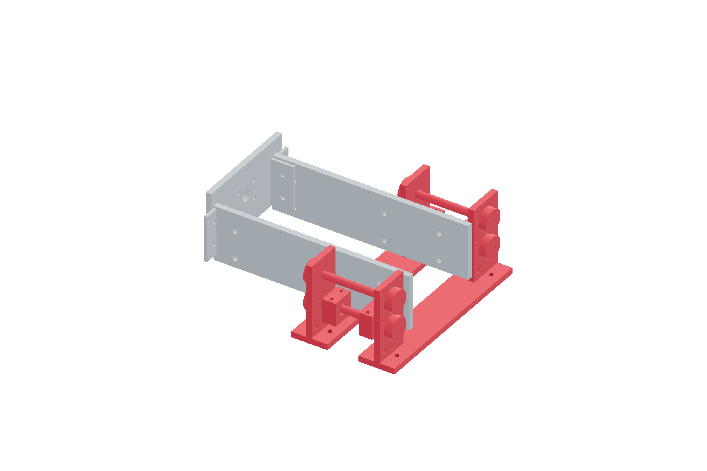

Payload / captured crash mount91 / 179
Install the four ground guide rods
Two parallel guides per pod carry the detachable mount without using the locating collars as spring thrust stops. Metal supports and bronze guides establish the sliding path.
Add4 ground rods · 4 integrated 40 × 80 mm pod ends · 2 fixed crossbars · 4 bronze guide blocks · 8 split collars · metal angles
Tools / setupCaliper · square · hex keys · rigid cradle support

- Join the two fixed metal crossbars to the cradle with metal angles. Start each pod’s integrated end plates on the crossbars.
- Align both rod holes in each end plate, placing the two guide axes 30 mm apart.
- Fit the 8 × 100 mm ground rods without cutting or forcing them. Add the lower bronze guides at their 40 mm separation.
- Seat metal support fasteners progressively while the guided members still slide freely.
- Fit the split collars only to locate rods. Keep working spring reaction on the fixed shoulder/tie structure.
Ready when
Both pods have freely sliding parallel guides, while the seated output has no perceptible rocking under a reversible working-load hand check. A tight sliding guide or loose seated output fails the mount. Correct alignment/bushing fit; collar friction cannot replace a missing metal thrust path.